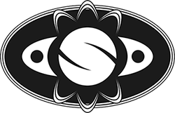
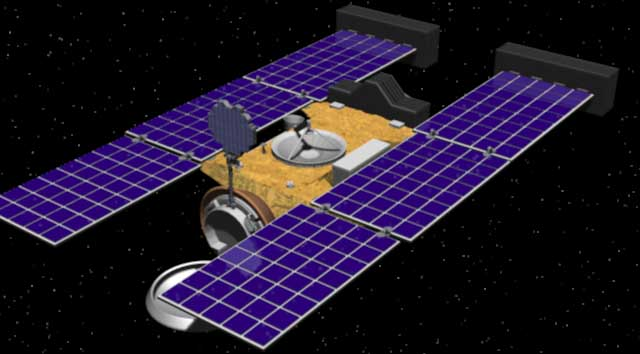
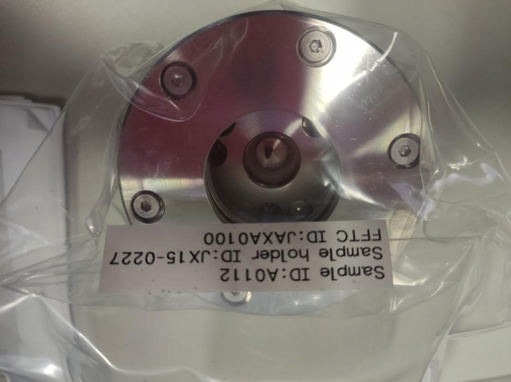

Sassi nello spazio
I corpi minori del sistema solare

Chi sono?
- My name is Sirio Negri
- Astrofilo da sempre
-
Papà di Mistral e dell'Osservatorio Il Coreggiolo
- M16
I corpi minori
- Comete
- Asteroidi
- Pianetini
Comete nel mito
- Portatrici di sventura
- Le profezie di Nostradamus
- La cometa di Halley e l'apocalisse
Lo studio delle comete
-
XVI secolo: Tycho Brahe e i primi calcoli delle distanze
-
1618: la disputa tra Orazio Grassi e Galileo
-
XVII secolo: Halley calcola il periodo di una cometa
- XIX secolo: Bessel è sulla strada giusta
- 1950: Whipple elabora la teoria odierna
Cosa sono le comete?
Come sono fatte le comete?
Il nucleo
La chioma
Le code
Il bow shock
I getti
Da dove vengono?
The Halley Armada
Deep Space 1
A caccia di polvere di comete

Una cometa come bersaglio
Più vicini di così mai prima
Cometa di Halley

Cometa di Encke
Cometa di Hale-Bopp
19P/Borrelly

Shoemaker-Levy 9
67P/Churyumov-Gerasimenko
C/2020 F3 Neowise
Lo studio degli asteroidi
- 1772: Titus-Bode e il pianeta mancante
- 1801: Piazzi scopre il primo "Pianetino"
-
L'epoca "classica della ricerca sugli asteroidi"
- 1998: le nuove survey automatiche
Cosa sono gli astroidi?
Di cosa sono fatti gli asteroidi?
- C-type: Carbonacei
- M-type: Metallici
- S-type: Silicici
- P-type
- Acqua?
- Amminoacidi
La classificazione
- Secondo l'orbita (famiglie Hirayama)
- Secondo lo spettro
- Gli asteroidi attivi
Dove si trovano
- Fascia degli asteroidi
- Troiani
- Near-Earth Asteroids
L'esplorazione
- 1971: Mariner 9 visita Phobos e Deimos
- 1991-93: Galileo visita Gaspra e Ida
1997: NEAR Shoemaker sorvola Mathilde e atterra su Eros
2005: Hayabusa raccoglie polvere di Itokawa
2011-2015: Dawn raggiunge Vesta e Cerere, mettendosi in orbita
2014: Hayabusa2 raccoglie campioni di Ryugu

2014: Hayabusa2 raccoglie campioni di Ryugu

2021: OSIRIS-REx raccoglie campioni di Bennu

2021: DART
Gli altri corpi minori
- Pianeti nani
- Oggetti della fascia di Kuiper
- Oggetti transnettuniani
Cosa può fare l'astrofilo?
- Astrometria
- Fotometria
- Spettrometria
- Occultazioni
- Molto altro
Le foto brutte